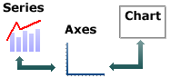
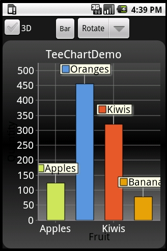

Next
|
|
Contents page Next |
Getting Started - building Charts and populating Data Series
Contents
Introduction
Building a Chart
Including TeeChart on the Android Page
Populate a new data Series
Selecting a Series type to suit your needs
 Everything comes together to make the final Chart, with Chart axes being the interface between Chart and Series. A Series has data, and its values will influence the label characteristics of the Chart axes. The axes appearance, colours, grid frequency and label fonts may all be defined for the Chart before adding data Series. TeeChart will make a best estimate of most values to minimise the need for you to manually define Chart and Series methods. |
The steps in this tutorial highlight how easy it is to build a Chart from scratch to enable you to modify and further enhance the appearance and functionality of the Chart
at runtime. Good Charting !!
public class TeeChartDemo extends Activity { ...
At some location in the code process you need to create the Chart. In the TeeChart demo it is created in the constructor of the class.
Eg. (Your .java unit should include an import to 'com.steema.teechart.Chart').
/** Called when the activity is first created. */
@Override
public void onCreate(Bundle savedInstanceState) {
super.onCreate(savedInstanceState);
mainInstance = this;
Settings.initPreferences(this);
chart = new TChart(this); // new GLChart(this);
//chart.setAutoRepaint(false); //optional, disable repaints whilst setting up chart variables
//...call here to any Chart setup routines
initLayout();
//chart.setAutoRepaint(true); //optional re-enable auto chart repaints
}
The call to initPreferences is optional, setting up the language for TeeChart messages and menus.
final String currentLanguage = getCurrentLanguage();
final String language = prefs.getString("language", currentLanguage);
if (! language.equalsIgnoreCase(currentLanguage))
Language.activate(language);
(Your .java unit should include an import to 'com.steema.teechart.styles.*').
Series bar = new Bar(chart.getChart()); chart.getAxes().getBottom().setIncrement(1); bar.add(123, "Apples", Color.green); bar.add(456, "Oranges", Color.red); bar.add(321, "Kiwis", Color.yellow); bar.add(78, "Bananas", Color.orange);
Run the project and press the button. Four new bars will appear on your Chart. That's it !! There's no more to it.
If you leave the colour variables out TeeChart will assign colours according to the selected Chart Theme Colour Palette.
e.g.Series bar = new Bar(chart.getChart()); bar.add(123, "Apples"); bar.add(456, "Oranges"); bar.add(321, "Kiwis"); bar.add(78, "Bananas");
will give the following result:

The basic Series' add method accepts 3 variables, Value, Label and Colour.
The add method thus assumes equal spacing of values on the Label axis (in this case the X-Axis).
Several add overloads are available according to the Series Type you are using. The Bar Series will accept x and y values.
Add another button to your project and put this code in it. Run the Project and add points using this code:
java.util.Random rnd = new java.util.Random();
Series bar = new Bar(chart.getChart());
if (bar.getCount() > 0)
{
// Increment X Axis value and add a new random point
bar.add((bar.getXValues().getLast() + rnd.nextInt(10)),
((bar.getYValues().getLast() / (bar.getYValues().getLast() - 1.0)) +
rnd.nextInt(10)), "Lemons", Color.greenYellow);
}
else
{
// Add a new random point
bar.add(1, rnd.nextInt(10), "Lemons", Color.yellow);
}
|
Series Type |
No. of variables |
Datasource Properties |
|
Standard types |
||
|
Line |
2 |
XValues, YValues, XLabel |
|
Horizontal Line |
2 |
XValues, YValues, XLabel |
|
Fast Line |
2 |
XValues, YValues, XLabel |
|
Bar |
2 |
XValues, YValues (called Bar), XLabel |
|
HorizBar |
2 |
XValues, YValues (called Bar), XLabel |
|
Area |
2 |
XValues, YValues, XLabel |
|
HorizArea |
2 |
XValues, YValues, XLabel |
|
Point |
2 |
Xvalues, YValues, XLabel |
|
Pie |
1 |
PieValues, XLabel |
|
Arrow |
4 |
StartXValues, StartYValues, XLabel, EndXValues, EndYValues |
|
Bubble |
3 |
Xvalues, YValues, XLabel, RadiusValues |
|
Gantt |
3 |
StartValues, EndValues, AY (Y axis level), AXLabel (Label optionally shown on Y-axis or as mark) |
|
Shape |
4 |
X0 (Top), Y0 (Bottom), X1 (Left), Y1 (Right) |
|
Subset of Extended Types |
||
|
Bezier |
2 |
XValues, YValues, XLabel |
|
Candle |
5 |
OpenValues, CloseValues, HighValues, LowValues, DateValues |
|
Contour |
3 |
XValues, YValues, XLabel, ZValues |
|
Error Bar |
3 |
XValues, YValues, XLabel, ErrorValues |
|
Point3D |
3 |
XValues, YValues, XLabel, ZValues |
|
Polar |
2 |
XValues, YValues, Labels (Polar has Angle and Radius) |
|
Radar |
2 |
XValues, YValues, Labels (Radar has Angle and Radius) |
|
3D Surface |
3 |
XValues, YValues, ZValues |
|
Volume |
2 |
XValues, YValues (VolumeValues), XLabel |
|
Other Series types | ||
|
There are many more TeeChart Series Types. Please check the definition of the Series type you wish to use, using either the programming environment's intellisense code prompt or the TeeChart Javadoc reference document. | ||
 |